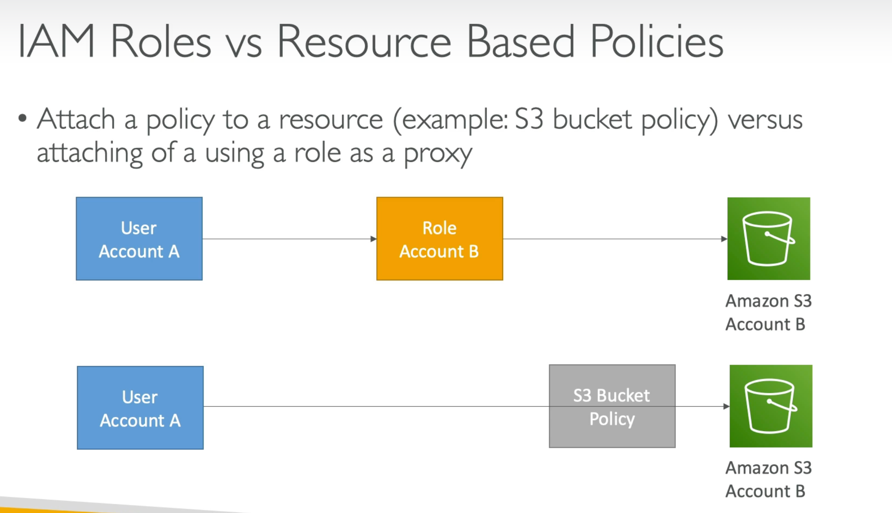
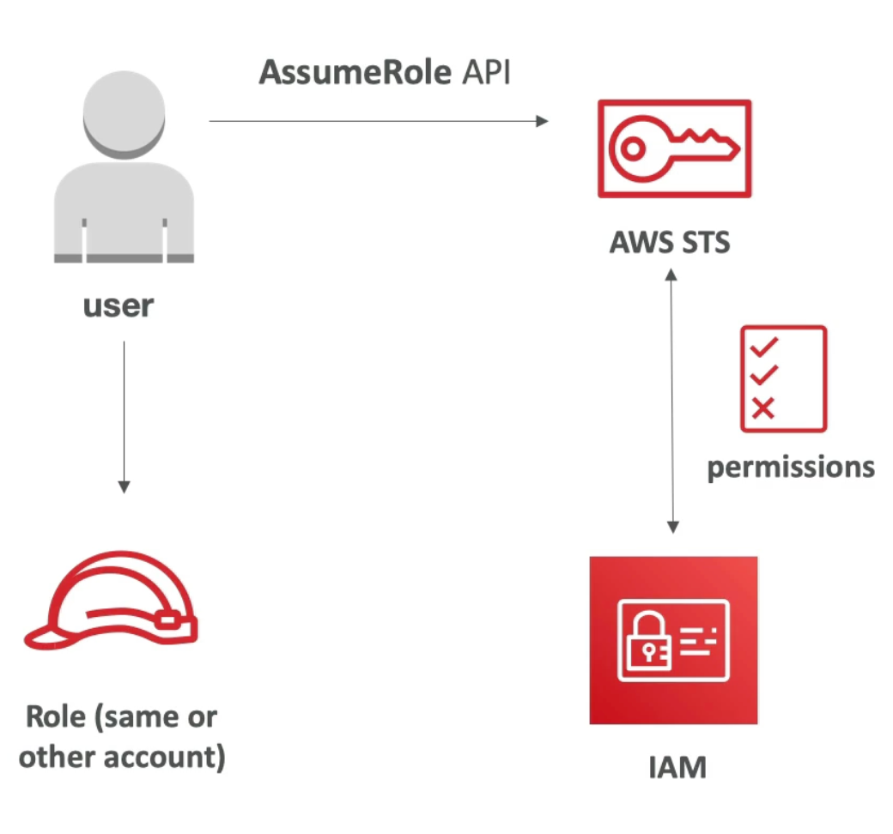
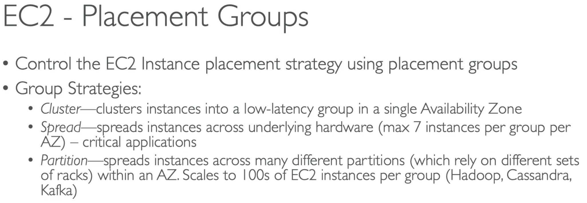
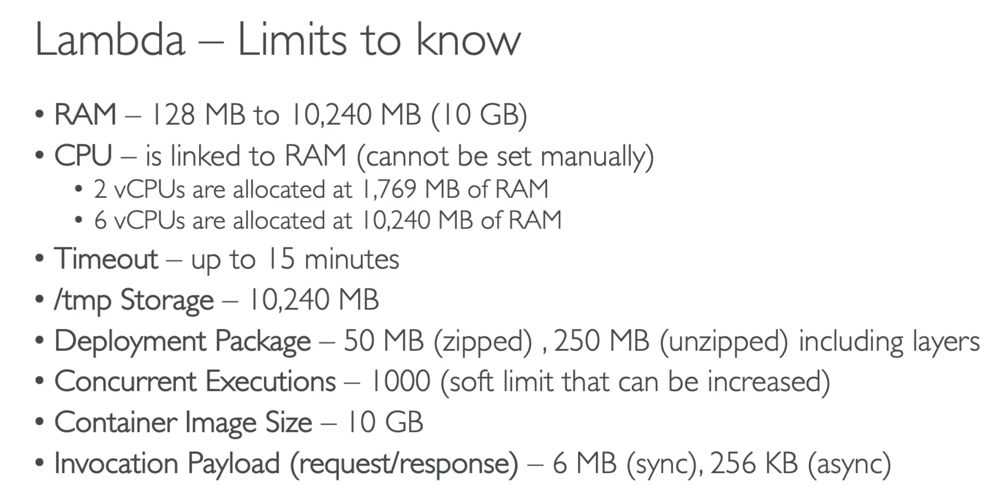
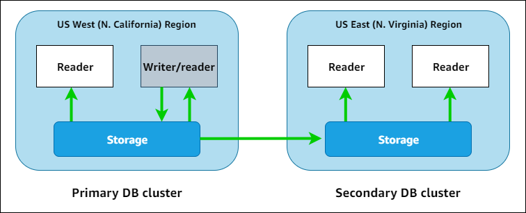

Identity
| AWS Service | Purpose |
|---|---|
| IAM | cannot assume role cross account |
IAM Service Role: 将权限授予 AWS 服务从而执行操作 |
| STS (AWS Security Token Service) | Create temporary limited-privilege credentials
SAML (Security Assertion Markup Language)
- 在身份提供商 IdP 和服务提供商 SP 之间交换认证和授权数据
- 通常用于实现单点登录 SSO |
| Cognito | identity and access management
- identity pool: grant temporary access to AWS
- user pool: for user registration and authentication |
Identity-based Policy vs. Resource-based Policy

IAM Permission Boundary
（权限边界）: 限制 IAM User/Role 能获得的最大权限

STS (AWS Security Token Service)
创建临时安全凭证


Trust Policy & Permission Policy
Trust Policy 可以指定主体 (Principal) 可以进行什么操作 (Action)
{
"Version": "2012-10-17",
"Statement": [
{
"Effect": "Allow",
"Principal": {
"AWS": "arn:aws:iam::123456789012:user/Alice"
},
"Action": "sts:AssumeRole"
}
]
}
Permission Policy 定义了拥有该角色的用户或服务可以对哪些AWS资源进行哪些操作
{
"Version": "2012-10-17",
"Statement": [
{
"Effect": "Allow",
"Action": "s3:ListBucket",
"Resource": "arn:aws:s3:::example_bucket"
},
{
"Effect": "Allow",
"Action": "s3:GetObject",
"Resource": "arn:aws:s3:::example_bucket/*"
}
]
}
Computing
| AWS Service | Purpose |
|---|---|
| EC2 | |
| EC2 Graviton | Better performance |
Lambda@Edge
- 在 CloudFront 上运行 Lambda
- 在 CloudFront 分发阶段运行 | max 15 min
- in VPC: use NAT Gateway to access internet
- credentials 不能存储在环境变量中
Provisioned Concurrency
- 减少冷启动时间
- 成本高，始终保持一定数量的实例就绪
Reserved Concurrency
- 限制函数运行的最大实例数
SnapStart
- 减少冷启动时间
- 不和 Provisioned Concurrency 一起使用 |
| Step Function | Combine Lambda and other AWS services
Standard workflow: exactly-once, up to 1 year, for long-time auditable workflow
Express workflow: at-least-once, up to 5 min, for high-event-rate workload |
| Elastic Kubernetes Service
EKS | kubernetes
more complex
EKS
- run Kubernetes on EKS-managed clusters/infra from **AWS
EKS Anywhere**
- run Kubernetes on EKS-managed clusters/infra from **on-premises
EKS Distro**
- run Kubernetes on your own clusters/infra from on-premises
Topology Spread Constraints
- 确保 pods 在多个 AZ 之间分布
- 提高弹性 resilience
Cluster AutoScaler |
| ECS: Elastic Container Service | container orchestration
- set enableECSManagedTags to true for run-task |
| Fargate | run ECS containers
serverless |
| App2Container | - 将现有应用程序打包成容器
- 部署到 ECS 或 EKS
- 减少代码修改和手动配置
containerize and migrate existing app |
| Compute Optimizer | analyse utilisation metrics
generates optimisation recommendations
Enhanced infrastructure metrics:
- 长期的数据分析，扩展到 3 个月
- 额外费用 |
| SES: Simple Email Servics | send email, store email template |
| AppSync | 扩展的 GraphQL API
- 实时数据查询和同步
- 支持 GraphQL 和 WebSocket |

EC2
Launch Types
- 1. on-demand
- 2. spot
- 3. reserved
Placement Groups

- 1. Cluster
- 1. single AZ, close to each other
- 2. low latency application, e.g. HPC, big data
- 2. Partition
- 1. spread in multiple partitions
- 2. prevent single hardware failure
- 3. large-scale distributed, fault-tolerant system, e.g. Hadoop
- 3. Spread
- 1. spread underlying hardware
Metrics

Lambda

Data
| AWS Service | Purpose |
|---|
| - object-level
- speed: slowest
- event source notification: use Lambda to process object uploaded
- apache parquet: for S3 inventory reports, speed up big data jobs
- s3 replication time control: data replication, 99.99% objects within 15 mins
- cross region: create bucket in new region, configure cross-region replication
S3 Storage Lens
分析 S3 存储的使用情况和成本
S3 Select
- 适用于查询特定数据
- 不适合大规模数据分析
S3 Transfer Acceleration
- 使用 CloudFront 的全球边缘位置来加速向 S3 存储桶上传文件的速度
S3 Server Access Logging
- 只能记录请求, 不能记录对象访问
S3 Object Lock
- 数据保护
- 通过使用 WORM (Write Once, Read Many) 来防止对象被删除或覆盖 |
| EBS | block-level
maximun 16TB
persistent
single instance
speed: fastest |
| Amazon Data Lifecycle Manager (DLM) | 创建、保留和删除 EBS 卷快照和 AMI，以实现更高效的数据备份和管理 |
| EFS | file-level
shared
serverless
only Linux |
| **Amazon FSx for
FSx Lustre: Linux**
FSx Windows
FSx OpenZFS | shared
high-performance
big data analytics
Linux, Windows
扩容：update-file-system |
| DDB: DynamoDB
DAX: DynamoDB Accelerator
WCU: write capacity unit
RCU: read capacity unit
Provisioned Throughput: specify the number of RCUs and WCUs you want to reserve
On-Demand Capacity Mode: automatically scales based on the actual traffic | On-Demand: no capacity planning, pay-per-request
- cannot notify other service, use EventBridge
- DAX: for read, not for write; at least 3 nodes for cluster
- TTL: automatically expire items after a specified timestamp
****- convert DDB table to global:
A: directly change to global
B:
- enable DDB Stream
- create a new replication table in a second region |
| Aurora | - fully managed
- only MySQL, PostgreSQL
- better performance than RDS
Aurora Serverless v1
- 处理突发的大量流量，在无使用期间降低成本
- 适用于不确定的, 间歇性的负载
Aurora multi-master DB cluster
- improve write, expensive
- 无法跨 region 写
Cluster Endpoint
- 连接到集群的唯一端点
- 将数据库请求路由到集群中的主实例
- 处理读写操作
**Reader Endpoint
-** 连接到集群中的 read replica
- 处理读操作 |
| RDS | Fully managed service
RDS Proxy
管理应用程序和数据库实例之间的连接池
减少对数据库连接管理的开销
Multi-AZ Deployment
提供了高可用性和数据冗余 |
| Timestream | time-series database |
| CloudFront | CDN 全球内容分发网络
根据用户位置自动选择最优的边缘位置提供内容
- 可以有 multiple origins, 可以在任何 region
- 可以通过 origin group 实现自动的区域切换
- 只提供域名
- 没有复杂功能 |
| Kinesis Data Stream | data streaming service
- 复杂事件
- 实时处理和分析数据流
- 不能用作 store 或 buffer |
| Kinesis Data Firehouse | capture, transform, load streams into stores
- 简单事件
- fully managed 完全托管, 自动扩展
- 将数据传输到 S3, Redshift, Elasticsearch, Splunk
- 可以用作 buffer |
| | |
| MQ | 场景: 已经在使用 ActiveMQ 或 RabbitMQ，并且希望迁移到AWS上 |
| SQS | fully managed queue |
| | |
| OpenSearch | log analytics, real-time search
derived from elastic search
- general node: EBS, expensive for large volume
- instance-backed: EBS or instance storage, limited capacity
- UltraWarm: SSD for index, S3 for other; cheapest; complement for others |
| EMR | big data analytics
Apache Spark, Hive, Presto |
| Athena | analyze data
SQL, Apache Spark
|
| QuickSight | Business Intelligence
Dashboard |
| Data Pipeline | automate movement and transformation of data |
| | |
| DataSync | - 将文件数据迁移到 AWS, e.g. S3, EFS, FSx for Windows File Server |
| Data Migration Service | - 将数据库迁移到 AWS, e.g. MySQL, PostgreSQL, Oracle, SQL Server, etc.
- 支持迁移期间的数据复制
- 支持同构 homogeneous 和异构 heterogeneous |
| Storage Gateway | on-premise access to cloud
- File Gateway: S3, glacier
- Tape Gateway: long-term archive
- Volume Gateway: block |
| Glue | - 自动化 ETL（Extract, Transform, Load）服务
**Glue Data Catalog
- 元数据**管理
- 与 Athena 集成，可以轻松查询和分析存储在 S3 中的数据 |
| Transfer Family | file transfers |
| AWS Transfer for SFTP | S3 的完全托管的 SFTP 服务 |
| IAM database authentication | - 通过 IAM users 或 roles 进行身份验证
- 不再需要 credential |
| Document DB | - MongoDB 兼容
- 高可用性和自动扩展
- 适用于迁移 |
| Redshift | - 数据仓库
- SQL查询
- 大规模数据分析
Redshift Spectrum
- 直接查询 Amazon S3 中的数据
- 无需将数据加载到 Redshift 集群中 |
| AWS Backup | - 集中 Backup 管理
- 监控
- 拷贝 Backup 到其他 Region |
| ElastiCache | - 使用 auth token |
Cross-Region Database
RDS
- 1. Cross-Region Read Replicas 跨区域读副本 (read only 只读)
- 1. promote a read replica
- 2. 灾难恢复：在主区域发生故障时，将读副本提升为独立的主数据库实例 standalone DB instance
- 2. Cross-Region Backups and Restore 跨区域自动备份和恢复
- 1. 灾难恢复：在主区域发生故障时，可以从备份中恢复数据库
Aurora
- 1. Global database
- 1. RTO < 1 min
- 2. cross region DB cluster
- 1. 跨区域读写 (write/read)

DynamoDB
- 1. Global Tables 全球表
- 1. 灾难恢复：在一个区域发生故障时，其他区域的副本仍然可用
- 2. Cross-Region Backup and Restore 跨区域备份和恢复
- 1. 灾难恢复：在主区域发生故障时，可以从备份中恢复表
On-Demand
- 1. EC2 On-Demand Instances
- 2. RDS On-Demand Instances
- 3. DynamoDB On-Demand Capacity Mode
Edge-optimized
- 1. API Gateway Edge-Optimized Endpoints: 将 API 请求路由到最近的 CloudFront 边缘位置
- 2. S3 Transfer Acceleration: 利用 CloudFront 边缘位置来加速传输
- 3. Lambda@Edge: 在 CloudFront 边缘位置运行 Lambda 函数
Saving Plan
- 1. EC2 Instance Savings Plans
- 1. 针对特定的 EC2 instance type
- 2. 更高的折扣
- 3. 适用于 Reserved Instances
- 2. Compute Savings Plans
- 1. 应用于所有 AWS 计算资源, 包括 EC2, Lambda, Fargate
Security
| AWS Service | Purpose |
|---|---|
| KMS: Key Management Service | - cross-account access: 1. key policy; 2. IAM policy - cannot convert key, only create new - use s3 bucket keys to reduce call to KMS |
| Secrets Manager | manage secrets lifecycle - can replicate - not support sharing secrets using AWS RAM |
| Macie | protect sensitive data |
| CloudTrail | 监控 API 调用 track API usage |
| Security Hub | centralized view of security state |
- 安全状态管理
- 合规性检查 |
| Detective | analyze date
investigate potential issues |
| Audit Manager | audit AWS usage
simplify risk |
| Shield | DDoS protection |
| Inspector | Identify security vulnerabilities
security assessment |
| GuardDuty | Monitor malicious activities
identify potential security threats
- 机器学习, 行为分析, 威胁检测 |
| Web Application Firewall
WAF | protect web applicaitons from common exploits
- 帮助保护 Web 应用程序免受常见 Web 漏洞和攻击
- 定义 Web ACL 允许或阻止流量到达 App
- 用于 API Gateway
rules
- allow
- block
- count
- CAPTCHA |
| Firewall Manager | 集中管理跨多个账户的 AWS WAF 规则 |
| Network Access Analyzer | - 识别和分析网络访问路径
- 网络安全性和访问分析 |
| RADIUS Remote Authentication Dial-In User Service | - 网络协议
- 提供集中化的身份验证
- MFA |
KMS vs. Secrets Manager
KMS
- manage encryption keys
Secrets Manager
- manage SSH key pairs
身份验证
SSO: Single Sign-On
- 身份验证机制
- 使用一组凭据（如用户名和密码）登录多个系统
- 自动获得访问权限, 不需要重新输入凭据
IDP: Identity Provider
- SSO 通常通过 IDP 实现
- 负责验证用户的身份
- 通过 OIDC, OAuth, SAML 等协议实现
Network
| AWS Service | Purpose |
|---|---|
| ENI: Elastic Network Interface | - virtual network interface attached to EC2 - acts as a network adapter and enables communication between EC2 and other resources within the VPC or the internet |
| ALB | HTTP/HTTPS |
restrict access to ALB:
- configure CloudFront to add a custom HTTP header
- configure ALB to only forward requests with custom header
- 配合 OIDC IDP 处理认证和授权 |
| | |
| VPC (Virtual Private Cloud) | 虚拟网络环境
CIDR block
- 地址范围内的 IP 将被用于 VPC 中的资源
Subnets
- VPC 中的一个逻辑分区，每个子网可以位于不同的可用区。
- Public Subnet 直接访问互联网, Private Subnet 不能
Route Tables
- 将流量定向到目标 |
| VPC Gateway Endpoint | VPC ↔ ONLY S3, DDB
- 不能从 on-premise 访问
- 只能用于 S3, DDB |
| VPC Interface Endpoint | on-premise, VPC ↔ Other Services |
| Gateway Load Balancer | - work with AWS PrivateLink to enable secure communication between VPC & AWS Services
- deploy and scale 3rd-party virtual appliances |
| Transit VPC | multiple VPC |
| Transit Gateway | on-premise ↔ VPCs
- 连接多个 VPC 和本地数据中心
- 通过单一网关集中管理和路由流量 |
| PrivateLink | VPC ↔ AWS Service
不经过互联网
VPC Endpoint Service
- 可以在 CIDR overlap 的情况下使用 |
| Direct Connect | on-premise ↔ AWS Single Region
不经过互联网
- physical, dedicated connection
- no encryption in transit
- 时间长，费用高
Direct Connect Gateway
- 跨 Region 链接多个 VPC
- 无需为每个区域配置单独的 Direct Connect
- 高性能 |
| Site-to-Site VPN | on-premise ↔ AWS
VPN连接需要通过互联网进行加密通信
encrypted by IPSec |
| VPC Peering | VPC ↔ VPC
- 一对一, 需要双方的路由配置和管理
- 不经过互联网
- 不支持传递路由 |
| Client VPN | connect remotely to AWS or on-premises |
| VIF: Virtual Interface | logical link over Direct Connect
- private VIF: to VPC
- public VIF: public AWS Services, S3, DDB…
- transit VIF: to multiple VPCs in a single region |
| Session Manager | Login to hosts in private subnet
Session Manager 允许在没有 SSH key pair 的情况下安全地访问 EC2 实例，不需要重启实例 |
| Internet Gateway | VPC ↔ Internet
- 配置入站 inbound 和出站 outbound
- allow public IPs to internet |
| NAT (Network Address Translation) | only outbound
allow private IPs to internet
cannot span multiAZ |
| public NAT Gateway | private subnet → internet
单向 |
| private NAT Gateway | private subnet → VPCs or on-premises network
单向 |
| NACL: Network Access Control List | allow all inbound and outbound by default |
| WorkLink | Mobile Access to Internal Websites |
| | |
| | |
| Access Control List | allow all by default
- stateless |
| Security Group | for VPC
block all inbound by default
allow all outbound by default
- can only specify allow rules
- stateful, inbound can reflect to outbound |
| Elastic IP | - 通常分配给 **EC2, NLB, NAT Gateway
- 不分配给 ALB**
- 分配给 EC2: 单实例应用, 需要直接访问实例
- 分配给 NLB: 高可用性, 负载均衡, 统一访问点 |
| API Gateway | manage REST, HTTP, WebSocket APIs
- REST API can invoke DDB directly
- synchronous execution returns response immediately
- enable CORS
- 配合 OIDC, OAuth, JWT 使用
edge-optimized
- 使用 CloudFront 缓存 API 响应
- 将请求路由到最近的 AWS 区域
- 减少 API 调用的延迟
Usage Plan
- 管理 API 速率限制和配额 |
| Route 53 | global service
DNS: domain registration, routing, health check
- hosted zone: container for records (the rules of route traffic)
- alias record: like CNAME record, point to load balancer
- route traffic to API Gateways in different regions |
| Global Accelerator | - 提供两个 global static public IP
- 自动路由流量到最优的端点 endpoint
- 适用于非标准 REST 方法 |
| | |
| IoT | Greengrass
- offline
- 本地设备的边缘计算和数据处理
IoT Core
- 连接数十亿设备，处理数万亿条消息，并将消息路由到 AWS 终端节点和其他设备
- 支持 MQTT 协议
- 使用 X.509 证书进行设备认证 |
Route53
DNS 解析：Route 53将域名与AWS资源（如EC2实例、S3存储桶）或外部资源（如外部网站）的IP地址映射起来。它支持以下几种DNS记录类型：
- A记录：将域名映射到IPv4地址。
- AAAA记录：将域名映射到IPv6地址。
- CNAME记录：将一个域名映射到另一个域名。
- MX记录：定义邮件服务器。
- TXT记录：用于存储任意文本数据，常用于域名验证。
HTTP API & REST API
HTTP API
- 简单的 microservice 架构
- 基本的集成和认证功能
REST API
- 更全面, 直接集成 DDB
NACL & Security Group
NACL
- 无状态 Stateless: 每个方向 (inbound & outbound) 都需要独立配置
- Allow, Deny
Security Group
- 有状态 Stateful: 如果入站请求 inbound 被允许，返回的出站响应 outbound 自动被允许
- Only Allow
连接方式
不经过互联网
- 1. Direct Connect (on-premise ↔ VPC)
- 2. Site-to-Site VPN (on-premise ↔ VPC)
- 3. PrivateLink (VPC ↔ services)
- 4. VPC Peering (VPC ↔ VPC)
OS
| AWS Service | Purpose |
|---|---|
| **System Manager System Manager Patch Manager** |
1. manage resources 2. apply patch on hybrid environments (Windows and Linux, EC2 and on-premises) |
| System Manager Parameter Store | store values, passwords as plain text or encrypted data |
| System Manager Run Command | remotely manage configuration |
| System Manager Agent | 允许实例与 AWS Systems Manager 服务进行通信 |
| OpsWorks | manage configuration by Chef, Puppet 主要用于配置管理和自动化部署 |
Workflow
| AWS Service | Purpose |
|---|---|
| EventBridge | Event-driven Rule to Lambda, SNS |
- 事件驱动 |
| RAM (Resource Access Manager) | Share resource with other accounts
- 在 AWS 账户之间共享 AWS 资源，包括 VPC, RDS，不包含 Lambda
- 不共享 secrets 或 report |
| X-Ray | debug app |
| | |
| Config | assess, audit configurations
- 跟踪和检查配置, 包括 Security Group |
| Secrets Manager | manage, retrieve, rotate credentials |
| Certificate Manager | manage SSL, TLS |
| | |
| | |
| Outposts | run AWS infra on premises
hybrid
- 使 AWS 服务可以在本地数据中心运行
- 低延迟 |
| Workspaces | virtual desktops
- 桌面即服务 (DaaS), 提供完整的桌面环境
- cloud 虚拟桌面
Connection Alias
- 与一个主要目录关联，触发故障转移 |
| AppStream | virtual desktops
- 桌面应用程序流式传输, 仅访问特定的桌面应用程序 |
| Batch | batch processing |
| | |
Workspace & Appstream
WorkSpaces
- 完整的桌面环境
AppStream 2.0
- 特定应用程序环境
Organization
Deployment
| AWS Service | Purpose |
|---|---|
| AWS Organizations | account → OU ← SCP 1. Consolidated Billing Mode: all accounts are linked together for billing purpose 2. All Features Mode: create a hierarchy of organizational units (OUs) and apply service control policies (SCPs) at different levels to control permissions and actions across accounts |
| SCP (Service control policies) | set permission that IAM users and roles can perform restrict permissions by deny, not allow **** In organization, use SCP to control, not IAM |
SCP 和 IAM 策略的关系
- SCP 定义了账户可以执行的最大权限范围，但不授予实际权限
- IAM 策略用于具体授予用户或角色权限 |
| CUR (Cost and Usage Report) | create from organization management account |
| Control Tower | 多账户环境的治理
govern multi-account environment
Landing Zone: 预配置的 AWS 环境，包含多个 AWS 账户和组织单元，应用了安全和治理措施
Guardrails: 防护措施
Detective Guardrail: goverance and complicane |
| Service Catalog | consistent governance and management for IT services
- 允许组织创建和管理批准的 aws services
- 确保所有部署都符合标准
- 限制可访问的 services 类别 |
| | |
| Pinpoint | Connect with customers through multichannel communications |
| CodeDeploy | - automate deployments to EC2, on-premises, Lambda, or ECS
- appspec.yml: define the deployment process |
| CodeArtifact | package management |
| CloudFormation | - Template: 定义资源及配置, 一般在普通 account 部署
- StackSet: 跨多个账户和 region 的堆栈集合, 提供集中化的管理, 一般在 management account 部署
CloudFormation StackSets 允许跨多个 AWS 账户和 Region 自动部署和管理 CloudFormation Stack
DeletionPolicy
- 保护生产环境中关键数据资源
- 即使在删除堆栈时，重要的资源仍然保留或被安全备份
- prevent resource deletion: add DeletePolicy to resources in CloudFormation template
|
| CloudWatch Logs | - to track VPC flow logs
- CloudWatch Logs subscription filters: with Lambda or Kinesis
监控和管理系统 |
| CloudWatch Events | trigger Lambda, serverless workflow |
| CloudWatch Synthetic | create canaries
monitor API |
| Service Quotas | predefined limitations on the resources |
| Amplify | build full-stack apps
- 适用于 static website 静态网站的部署和管理 |
| | |
| App Runner | build, deploy, run container
no infra
cannot cross region |
| SAM (Serverless Application Model) | Build serverless |
| Beanstalk | - PaaS
- deploy and scale app
cannot span different reigons
自动处理部署、容量配置、负载均衡、自动扩展和应用程序健康监控
*swap staging/production to deploy |
| Lightsail | low-cost, pre-configured cloud resources |
Infra, migration, DR & Charge
| AWS Service | Purpose |
|---|---|
| AWS Budgets | budgeting, forecasting |
- 设置预算
- 超过设定阈值时发送警报
- 实时监控和控制 AWS 成本 |
| AWS Cost and Usage Reports | cost and usage data |
| AWS Auto Scaling | monitor and automatically adjust capacity
EC2, ECS, DDB tables & indexes, Aurora replicas |
| AWS Trusted Advisor | provide recommendations that help you follow AWS best practices |
| | |
| Migration Evaluator | - 分析现有 IT 资产的成本和性能
- 提供在 AWS 上运行的成本和优化建议
- 评估总拥有成本 TCO |
| Migration Hub | discovery and migration
- 数据探索
- 收集和分析数据, 制定迁移规划 |
| Database Migration Service
- CDC: Change Data Capture
- Full Load Plus CDC | continuous data replication
CDC: real-time data synchronization for ongoing data change, by detect transaction log
Full Load Plus CDC: combines initial full data with continuous CDC |
| Application Discovery Service | collect usage
- integrated with AWS Migration Hub and AWS Database Migration Service Fleet Advisor
- 发现和收集本地数据中心的配置, 性能, 网络
Agentless Discovery
- 依赖于现有的虚拟化环境，如VMware
- 数据不够详细和全面的 |
| Application Discovery Agent | install on on-premise
discovery and migration
收集详细的服务器指标 |
| Application Migration Service (aka CloudEndure) | - 自动化从物理、虚拟或其他云到 AWS 的迁移 |
| Elastic Disaster Recovery
CloudEndure Disaster Recovery (deprecated) | disaster recovery on AWS
shift environment to AWS from on-premises when disaster |
| IAM Access Analyzer | - 分析 AWS 资源的访问策略，识别过度权限或错误配置
- 生成关于可疑或不符合最佳实践的访问配置的警报
- 支持 S3, Lambda, SQS, KMS, IAM |
| Cost Explorer | - 管理成本
- 设置预算和警报 |
| Usage Plan | - 管理和控制API的访问和使用
- 定义和实施配额, 速率限制以及访问控制 |
| Active Directory | - Microsoft 的目录服务
- Windows 环境
- 管理网络中的用户和计算机资源 |
| Directory Service | 设置和运行目录服务
AWS Managed Microsoft AD
- 在 AWS 上运行 Windows Server Active Directory
Simple AD
- 轻量级目录服务
- 适用于不需要完整 AD 功能的小型工作负载
AD Connector
- 目录代理
- 集成现有的本地 AD 与 AWS |
| Amazon Connect | Contact Control Panel (CCP)
- 接听和管理电话
- 查看客户信息
- 记录和标记通话
Contact Lens
- 机器学习驱动, 自动转录通话内容, 分析情绪, 生成报告 |
| AWS Cost Anomaly Detection | - 自动化的成本异常检测和警报
- 监控成本的异常变化 |
| Well Architected Tool | 改进架构 |
VMWare Migration
从 VMware 基础设施迁移到 Amazon EC2
- Use the VMware vSphere client to export the application as an image in Open Virtualization Format (OVF) format
- Create an Amazon S3 bucket to store the image in the destination AWS Region
- Create and apply an IAM role for VM Import
- Use the AWS CLI to run the EC2 import command.
Others
IP地址
A类: 8位前缀, 如 44.x.x.x
B类: 16位前缀, 如 44.66.x.x
C类: 24位前缀, 如 192.168.31.x
CIDR: 可变前缀, 使用子网掩码 VLSM 来定位, 如 192.0.2.0/24, 有24位前缀
Network prefixes: IP address ranges associated with on-premises network
DR
Active/Active: both serve traffic, 0 RTO & 0 RPO
Warm Standby: ready for deployment, mins of RTO & PPO
Pilot Light: snapshot, 10 mins of RTO & RPO
Backup & Restore: hours of RTO & RPO
SSL
Amazon-issued public certificates can’t be installed on an EC2 instance
To enable end-to-end encryption, you must use a third-party SSL certificate.
Vocabularies
trail 跟踪
trial 试炼
Application Auto Scaling
根据需求自动增加或减少资源容量
用于 EC2, ECS, Lambda, DDB, Aurora
错题笔记
预留实例（RI）适用于 EC2 实例的长期预留，但它们不适用于其他类型的计算资源（如 Fargate 和 Lambda），并且在需求波动较大的情况下可能不够灵活。
Compute Savings Plan 为所有类型的计算资源（EC2、Fargate 和 Lambda）提供灵活的节省选项。它允许跨账户和跨区域应用节省计划，提供最大的灵活性和成本节省。这是一个适合组织内不同账户和波动需求的最佳选择。
处理 API Gateway 的跨域问题，应该直接在 API Gateway 上启用 CORS
使用预装 CodeDeploy 代理的 AMI 配置 Auto Scaling 组，简化部署管理
provisioned IOPS don't scale on demand
将 API Gateway 转换为 edge-optimized 端点, 启用 cache, 比 ElastiCache 更便宜
When using EC2 instances as network proxies (NAT), it is necessary to disable source/destination checks.
DOP-C02 Cheatsheet
S3
Bucket Policy: JSON-based access policy for access control
Cannot delete a bucket when it’s not empty
Lambda
Concurrency
- by default
- scales automatically based on incoming events
- only charged for the actual execution time
Provisioned Concurrency
- a specified number of instances of the function are always available
- reduce cold start, ensure consistent performance
- pay for the provisioned concurrency even if it is not active
Reserved Concurrency
- control the overall concurrency utilization
- cost-effective
Aurora
- turn an existing cluster to multi-AZ by adding a reading instance
EBS
Tag
- Use a managed rule to return a compliance failure for EC2::Volume resources that do not have a Backup_Frequency tag
KMS
Key rotation: AWS Config custom rule → SNS
Control Tower
Provision Enterprise Support: Account Factory for Terraform (AFT) flag aft_feature_enterprise_support
CloudWatch
CloudWatch subscription filter: route specific logs to Lambda